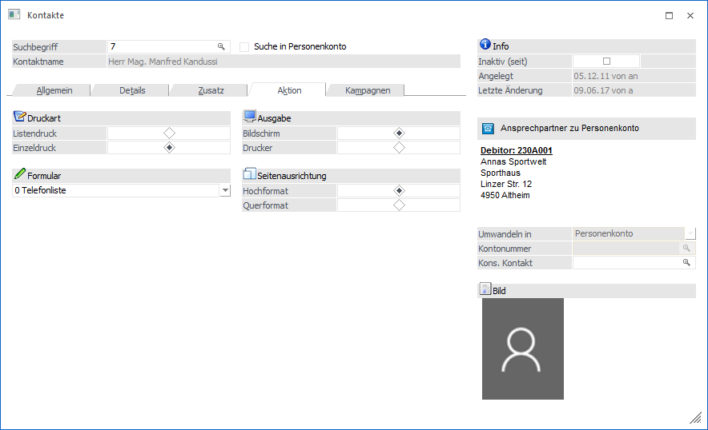
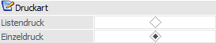
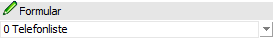
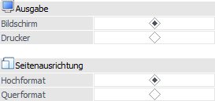

Im Register "Aktion" können diverse Auswertungen erzeugt werden.

Druckart

Ø Listendruck
Ist diese Option aktiviert, werden alle Kontaktadressen in die Liste mit einbezogen, wobei die Kontaktadressen über die Filterfunktion (Filter-Button) eingeschränkt werden können.
Ø Einzeldruck
Bei dieser Option wird nur der aktuell ausgewählte Kontakt verwendet.
Formular

Ø Formular
Aus der Auswahlbox kann das Formular gewählt werden, mit dem die Ausgabe erfolgen soll. Dabei werden die folgenden Varianten zur Verfügung gestellt:
ü 0 - Telefonlisten
Mit dieser
Auswertung wird der Name, die Adresse und alle seine Telefonnummern angedruckt.
Bei der Telefonliste kann zusätzlich entschieden werden, ob die Ausgabe in Hoch-
oder in Querformat erfolgen soll.
ü 1 - Stammblatt
Hier werden alle
hinterlegten Daten ausgegeben.
ü 2 - Anschriftenliste
Hier wird
die komplette Adresse ausgegeben. Bei der Anschriftenliste kann zusätzlich
entschieden werden, ob die Ausgabe in Hoch- oder in Querformat erfolgen
soll.
ü 3 - Etiketten
Damit können
Etiketten gedruckt werden. Zusätzlich kann entschieden werden, wie viele
Etiketten pro Kontakt ausgegeben werden sollen. Standardmäßig wird der Wert mit
1 vorgeschlagen.
Durch Anklicken des Buttons "Drucken" wird die Liste gemäß den Einstellungen ausgegeben.
Ausgabe / Seitenausrichtung / Etiketten

Ø Ausgabe
An dieser Stelle kann entschieden werden, ob die Ausgabe am Bildschirm oder am Drucker durchgeführt werden soll.
Ø Seitenausrichtung
Bei den Formularvarianten "0 - Telefonlisten und "2 - Anschriftenliste" kann an dieser Stelle das Format angegeben werden.
Ø Anzahl Etiketten
Bei der Formularvariante "3 - Etiketten" kann an dieser Stelle die Anzahl der zu druckenden Etiketten definiert werden.